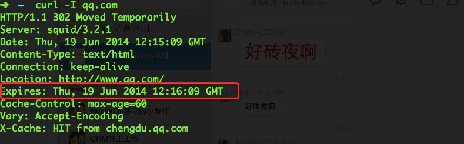
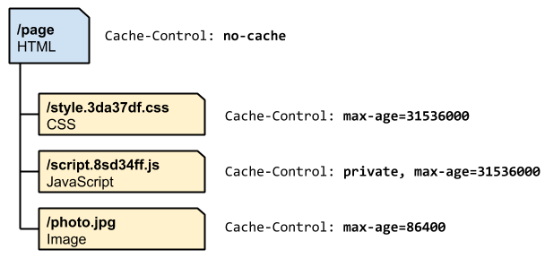

引子来了!
尼玛访问速度怎么这么慢啊？！
别人的网站为什么可以秒开啊？！！
这么点儿并发服务器的带宽就不够用了,一兆带宽一寸金啊！
无下限的沮丧有木有！！
减轻客户流量负担、减少服务器带宽开销、提高网络服务质量、增强网络信息可用性以及提高网络灵活性、
还有……速度！！！
- If-Modified-Since
- Cache-Control: max-age=0
- Last-Modified
- 304 Not Modified
- ETag: "20b1add7ec1cd1:0"
- Chromebook好像很酷
这都是些啥？
Speed The Web
Cache *
加速网络世界的缓存们
http缓存
- Expires策略
- Cache-control策略
-
- Cache-control header
- Last-Modified && If-Modified-Since
- Etag && If-None-Match
- 与缓存相关的http请求头（header）
Expires策略
Expires是Web服务器响应消息头字段，在响应http请求时告诉浏览器在过期时间前浏览器可以直接从浏览器缓存取数据，而无需再次请求。

Cache-control headers
Cache-Control与Expires的作用一致，都是指明当前资源的有效期，控制浏览器是否直接从浏览器缓存取数据还是重新发请求到服务器取数据。只不过Cache-Control的选择更多，设置更细致，如果同时设置的话，其优先级高于Expires。
- Public:响应可被任何缓存区缓存
- Private:缓存与用户相关
- max-age:多少秒内访问不会请求服务器
- no-cache:每次都去服务器验证
- no-store:每次都请求新鲜的资源
- min-fresh:未来多少秒内保持文档新鲜
- max-stale:缓存超时
Last-Modified && If-Modified-Since：
- Last-Modified:最后修改时间
- If-Modified-Since:max-age到期后，如果缓存资源有Last-Modified属性，则向服务器发送If-Modified-Since.
If-Modified-Since需要和max-age,Last-Modified配合使用，如果服务器发现文件的最后修改时间小于等于If-Modified-Since则会返回304
Etag && If-None-Match
- Etag:资源在服务器的唯一标识
- If-None-Match:max-age到期后，如果缓存资源有Etage属性，则向服务器发送If-None-Match.
If-None-Match需要和max-age,Etag配合使用，如果服务器发现文件的标识等于Etag则会返回304
与缓存相关的http请求头 总结
- Cache-Control
- If-Modified-Since
- If-None-Match
- Cache-Control
- Pragma
- Cache-Control
- Date
- Expires
- Last-Modified
- ETag
一点PS
在浏览器上点击刷新按钮、按Ctrl+F5刷新和输入网址后按回车键，使用的是不同的缓存机制，具体如下：
- 按刷新按钮：需要到服务器检查页面对象是否过期，不过期则使用缓存
- 按Ctrl+F5：强制刷新，不使用缓存，请求头中会有no-cache标签
- 输入网址后按回车：如果本地缓存存在并未过期，则直接使用而无需请求服务器
Pragma:no-cache是HTTP1.0里定义的header，与Cache-control:no-cache同意
http cache decision tree

简单的例子

Check List
- 使用同一域名提供相同的内容
- 为相应提供Etag标签
- 明确划分资源公私有属性
- 确定资源的最优缓存时间
- 变更范围最小化
Varnish

Varnish Cache is a web application accelerator also known as a caching HTTP reverse proxy. You install it in front of any server that speaks HTTP and configure it to cache the contents. Varnish Cache is really, really fast. It typically speeds up delivery with a factor of 300 - 1000x, depending on your architecture. A high level overview of what Varnish does can be seen in the video attached to this web page.
Varnish VCL
- vcl_recv函数
- vcl_pipe函数
- vcl_pass函数
- vcl_hit函数
- vcl_miss函数
- vcl_fetch函数
- vcl_deliver函数
- vcl_timeout函数